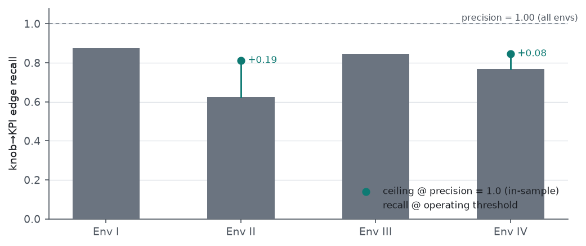
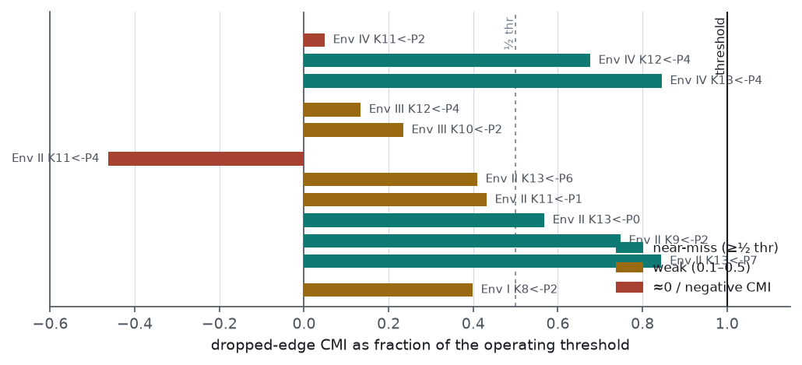
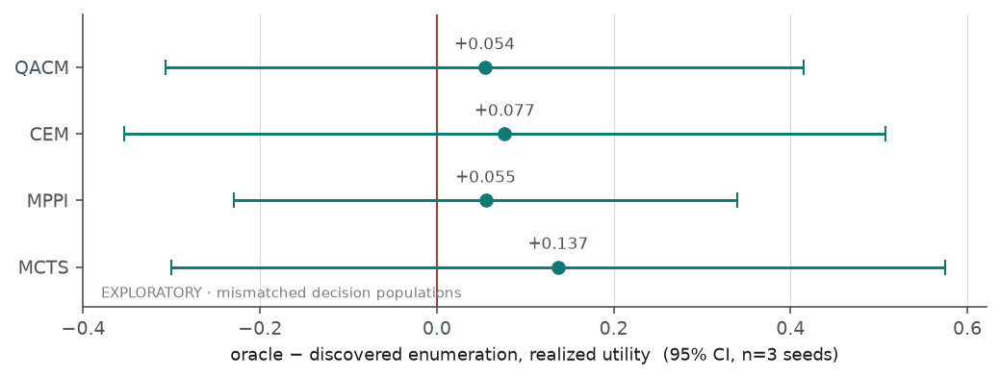
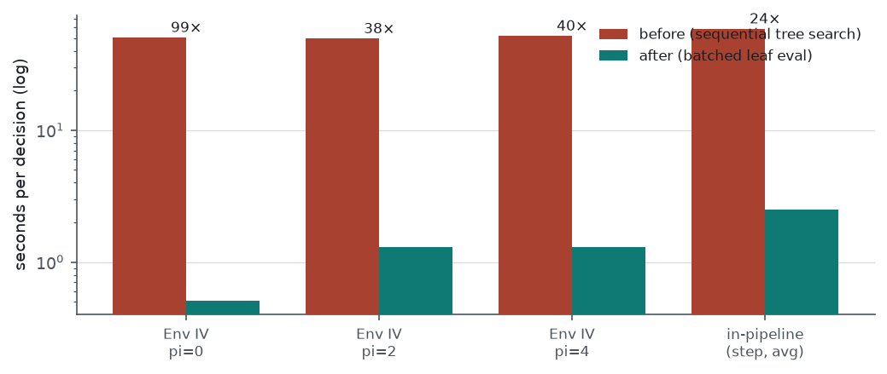

ModelBasedMCTS. This report (i) quantifies graph recovery directly against the
oracle adjacency; (ii) tests whether closing that recovery gap changes the decision; (iii) diagnoses and
repairs the planner non-termination; and (iv) records a degeneracy in the bootstrap graph-posterior
pipeline found along the way. Results in §4 (enumeration ablation) and the Env IV deconfounding line
are labelled exploratory: they are computed on the current environments, whose
difficulty dimensions are entangled, and a benchmark redesign is the agreed next step (§7).
We measure one-step causal-discovery recovery against the oracle enumeration graph, restricted to the
planning-relevant knob→KPI edges, using the trained CDL steady-state conditional mutual information
(mask_CMI) at the operating threshold. Precision is 1.00
in all four environments (discovery adds no false coupling among these candidates); recall is
0.62–0.88, so discovery drops 12–38% of true couplings. Dropped edges
separate into near-misses (CMI 50–84% of the threshold) and a residual set at approximately zero or
negative CMI. Lowering the per-environment threshold recovers edges in-sample at unchanged precision
(Env II 0.62→0.81, Env IV 0.77→0.85),
but this threshold is selected against ground-truth labels and is therefore an in-sample envelope, not a
deployable calibration. To test whether higher recall changes decisions, we compare the oracle and
discovered enumeration graphs at the decision level on Env IV, paired by mitigation seed
(exploratory): the oracle−discovered realised-utility difference is positive
but not distinguishable from zero for any of the four planners (all 95% intervals include zero, n=3),
consistent with the earlier matched-set STOP verdict and now robust to including a corrected MCTS planner.
Separately, the ModelBasedMCTS non-termination is diagnosed as a per-decision cost of ~59 s
— 3000 sequential batch-1 forwards over an 8-member ensemble — not an infinite loop; we replace
the search with a batched leaf evaluation that returns an equal-or-lower-cost action 38–99×
faster and restores a green test and lint baseline. Finally, the bootstrap graph-posterior artifact is
degenerate on these runs (resample-CMI under-selects; the calibrator collapses to a constant), so structure
sampling from it carries no per-edge information. No result changes the standing position that the learned
structure earns its keep in prediction but not, on these environments, in the decision.
The 2026-08-28 report left two threads pointing at the same causes: the discovered graph under-recovers
coupling, and the benchmarks are mostly “clean” (no load-bearing confounding). Two questions
follow directly. First, how much coupling does discovery drop, and is the shortfall a conservative
decision threshold (cheaply corrigible) or a limit of what the estimator can see (not corrigible without
better data)? Second, and prior to any investment in closing the gap: does closing it change the
mitigation decision? We answer both on saved checkpoints, with no retraining. We also resolve the
ModelBasedMCTS non-termination that forced its exclusion from the 2026-08-28 multi-seed sweep,
so that the decision-level comparison can include all four planners.
We take the ground-truth adjacency from build_oracle_enumeration_graph(env) and restrict to
knob→KPI edges (the edges that induce coupling and are read by conflict enumeration; convention
graph[kpi][knob], knobs occupying the low indices). The discovered structure is
the trained CDL mask_CMI thresholded at the configured
cmi_threshold — the same crisp graph the planner consumes. Precision is
1.00 in every environment: among knob→KPI candidates, discovery never selects a
non-edge. The entire error is recall (Table 1, Fig 1).
| Environment | true edges | recovered | dropped | precision | recall |
|---|---|---|---|---|---|
| Env I | 8 | 7 | 1 | 1.00 | 0.88 |
| Env II | 16 | 10 | 6 | 1.00 | 0.62 |
| Env III | 13 | 11 | 2 | 1.00 | 0.85 |
| Env IV | 13 | 10 | 3 | 1.00 | 0.77 |

The continuous mask_CMI separates the two regimes (Fig 2). Recovered edges carry CMI far above the threshold (median 1.0–2.4). Dropped edges are either near-misses — CMI 50–84% of the threshold (Env II ×3, Env IV ×2), which a lower cut recovers — or at approximately zero or negative CMI (Env II K11←P4 = −0.09, Env IV K11←P2 = 0.01, Env III both drops at 13–23%). A negative CMI is not evidence that the edge is absent from the data; it indicates estimator bias or noise, so we describe these as low/negative-CMI rather than “invisible”. The single edge with a demonstrated decision effect — Env I K8←P2, the +2.224 coordination interaction of the 2026-08-28 report — sits at 40% of the threshold, below any precision-preserving cut, so it is not among the cheaply recoverable edges.

Recall is a property of the graph, not of the decision. To test decision-relevance we compare the two
enumeration graphs end-to-end: the same environment and mitigation seed evaluated once with the
discovered graph (--enum-source self) and once with the oracle graph
(--enum-source oracle, perfect recall), paired across seeds, with the corrected MCTS included
(Fig 3). The oracle−discovered difference in realised utility is positive for all four planners
but its 95% interval includes zero in every case (QACM +0.054
[−0.31, +0.42], CEM +0.077
[−0.35, +0.51], MPPI +0.055
[−0.23, +0.34], MCTS +0.137
[−0.30, +0.58]; n=3 seeds). The uniformly positive point estimates are a
weak hint that the true graph helps; the intervals do not support a claim. This is consistent with the
matched-decision-set STOP verdict of 2026-08-25 and now holds with the previously-excluded MCTS planner in
the set.

ModelBasedMCTSThe reported “hang” is not a non-terminating loop. The search is a bounded for _ in range(n_simulations) over a depth-2, fully enumerable tree (root → bin → (bin, index)); with n_simulations=3000 and each simulation issuing one batch-1 forward over an 8-member ensemble, a single decision measured 58.9 s in the evaluate pipeline (Env IV, seed 1). At ten conflict panels per step and thirty steps this is on the order of five hours per seed — the observed stall. The tree has 50–210 leaves, so the 3000 simulations revisit each leaf roughly 14–60 times.
Two properties make bit-identical reproduction the wrong target. First, the per-leaf cost is not deterministic even under a fixed structure set (~0.5% per-call noise). Second, the leaf-cost surface is flat relative to that noise: at Env IV / pi=2 the six best leaves span 0.002 while the per-call standard deviation is ~0.011, so the best-versus-second gap (0.0004) is roughly 25× below the noise. As a consequence the original search is not reproducible — four calls on one state returned three different actions. We therefore replace the tree with a batched evaluation: spend the same n_simulations budget as k = n_simulations / n_leaves samples per leaf, scored in k batched forwards over all leaves, and return the argmin of the per-leaf mean cost. The ensemble and single-member scoring paths, the risk adjustment, and the utility-weight term are preserved; MCTS remains the last planner constructed, so the shared RNG stream and the other three planners’ reproducible results are unchanged.

The change is in cdd_oran/planners/mcts.py (batched _act and
_score_actions; the single-candidate _evaluate is
retained for direct scoring and unit tests, and the now-unused tree scaffolding removed). The end-to-end
m=1 tie-behavior test, which had depended on the old search’s arbitrary tie-break, was rewritten to
verify the utility-weight term moves the pick to the highest-signed-utility index under the batched
planner’s deterministic first-tie-break, retaining its sign-flip sensitivity. The full suite (82
tests) and lint pass.
The recall analysis in §2 uses the trained mask directly because the bootstrap posterior artifact is
uninformative on these runs. edge_stability recomputes CMI on resampled transitions through the
frozen predictor; on these checkpoints the resample CMI under-selects severely (the Env IV per-edge
frequency matrix is entirely zero; Env I’s maximum is 0.28 at two
edges), so the per-edge selection frequency carries almost no signal. The stored
*_posterior.json is built from these frequencies and then calibrated with an isotonic map;
because the input frequencies are near-constant, the calibrator collapses to a single knot
({x:[0.0], y:[floor]}) that maps every edge to one floor value. Any planner mode
that samples structure from this posterior therefore draws from noise. This is a scaling/refit issue in the
resample path, distinct from discovery quality, and is recorded here rather than repaired: its correct
validation target depends on the redesigned benchmark (§7).
The §2 analysis was adversarially reviewed (GPT-5.6 Sol, 18 numbered objections); the material points are incorporated. Recall/precision are computed over the knob→KPI candidate set only (7–11 selected edges per environment), so precision 1.00 is a point estimate with wide uncertainty, not a demonstrated invariant. The precision-preserving threshold in Fig 1 is chosen using the evaluation oracle’s labels and is therefore an in-sample envelope; a deployable version requires a calibration that does not inspect the evaluation graph (a held-out environment or seed), and a frozen-threshold, multi-seed replication over the full eligible adjacency. The near-miss / low-CMI split at half the threshold is a descriptive cut, not an uncertainty-derived boundary. The §3 ablation is exploratory for the reasons in its caption. Unweighted edge recall treats a negligible edge and the +2.224 edge identically; an effect-weighted recall would be a more decision-aligned measure.
The recall gap is real, but on the current environments closing it toward the oracle does not produce a distinguishable decision-level gain (§3), and the two candidate causal mechanisms examined previously (block-coordination, deconfounding) were each either localised or not distinguishable from zero. The current environments increase difficulty by varying several factors at once, so a difference between environments, or a null within one, does not isolate an interpretable benchmark dimension. The agreed next step is a redesign of the environment suite so that individual axes — coupling structure, confounding, residual non-linearity, observation noise — can be varied independently and tested one at a time. Environment design also determines what the graph posterior (§5) must be validated against, so the posterior repair is deferred until after the redesign rather than performed first. The prediction-level result of the earlier reports — that the learned structure improves prediction and generalises out-of-distribution — is unaffected and remains the project’s established contribution.
.temp/new_arch/NIGHT_0827/
(tools/edge_recall.py, cmi_margin.py, enum_source_ablation.py,
generate_figs_0901.py; reports/DECISION1_discovery_recall.md,
DECISION3_mcts_fix.md, sol_review_decision1.md). Enumeration ablation and Env IV
deconfounding outputs are marked _EXPLORATORY.md in their directories.cdd_oran/planners/mcts.py (batched search); test update in
tests/test_robust_planner.py. Full test suite and ruff pass; no retraining; nothing committed.build_oracle_enumeration_graph; ablation from paired evaluate.py re-runs on
runs/EnvironmentIV/cdl/20260824-031706-0f8ce1dc, seeds 0–2.